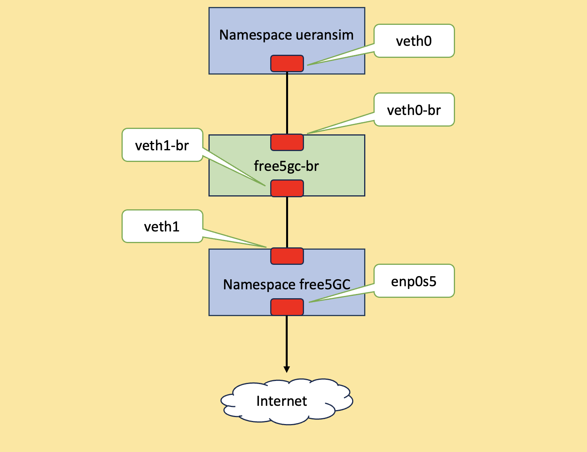
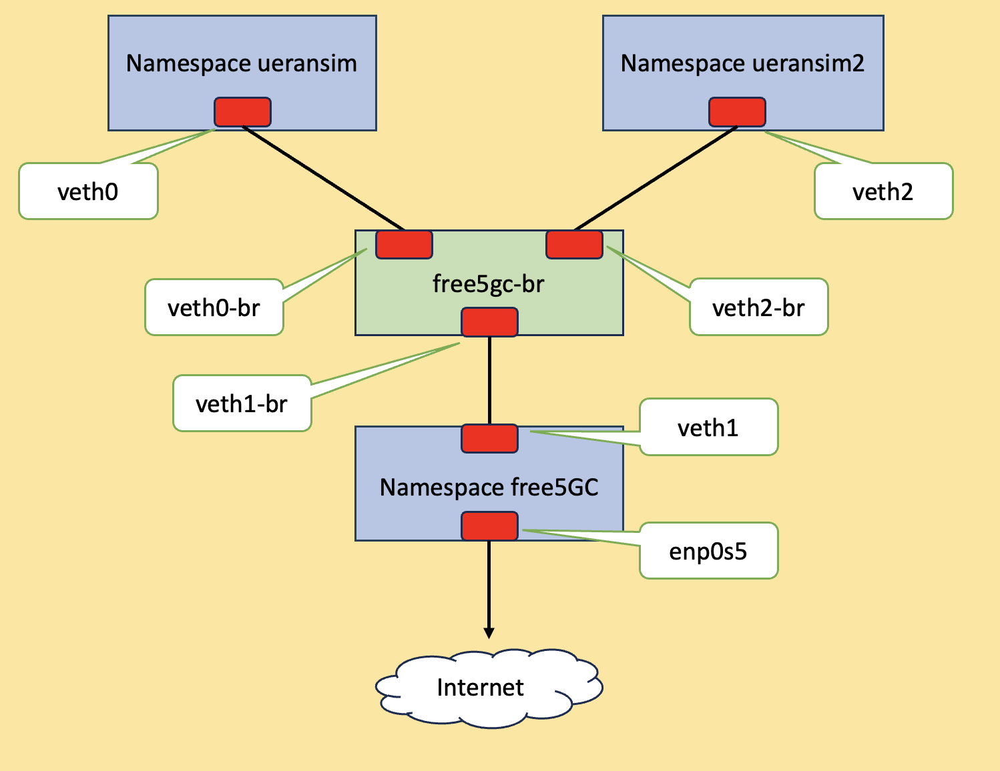

Use network namespace to separate the 5G core (5GC) and RAN simulator
Note
Author: Jimmy Chang
Date: 2023/7/5
Overview
This technique leverages namespace to run UERANSIM, an opensource 5G-UE and RAN(gNodeB) simulator, and connect to free5GC.
UERANSIM follows the 3GPP specification for developing and can support multiple 5G core (5GC) including free5GC.
Why are we using namespace? Well, you can follow ULCL and free5GC compose to set up the environment with VM and docker, but there are limitations for hardware’s capability. With network namespace, you can have different and separate network instances of network
interfaces and routing tables that operate independently.
So, what is network namespace? Network namespace makes a copy of network stack with its own routing table, firewall and devices. A named network namespace is an object at /var/run/netns/. The file descriptor resulting from opening /var/run/netns/ refers to the specified network namespace. Holding that file descriptor open
keeps the network namespace alive.
And how to make both namespaces communicating? A virtual Ethernet device (veth) pair provides the abstraction that can be used to create tunnels between network namespaces, and can be used to create bridge to a physical network device in another namespace. Veth pair also be used as standalone network devices.
When the namespace freed, veth device which attatch to would be destroyed.
The environment is as follow. Suppose you have already installed as well as set up free5GC and UERANSIM properly.
- free5GC v3.3.0
- UERANSIM v3.1.0
Note
Namespace free5GC represents host network namespace. And enp0s5 is an ethernet interface connectting to external.

Each devices as follow
| Device | IP |
| ------------- | ------------- |
| veth0 | 10.200.200.1 |
| veth1 | 10.200.200.2 |
| br-veth0 | none |
| br-veth1 | none |
| enp0s5 | 10.211.55.23 |
UE information in UERANSIM as follow. Already
| IMSI | DNN |
| ---------------- | ------------- |
| 208930000000003 | internet |
Configuration file of free5GC and UERANSIM
free5GC
- free5gc/config/amfcfg.yaml
Replace ngapIpList IP from 127.0.0.18 to 10.200.200.2:
info:
version: 1.0.9
description: AMF initial local configuration
configuration:
amfName: AMF # the name of this AMF
ngapIpList: # the IP list of N2 interfaces on this AMF
- 10.200.200.2 # 127.0.0.18
ngapPort: 38412 # the SCTP port listened by NGAP
sbi: # Service-based interface information
scheme: http # the protocol for sbi (http or https)
registerIPv4: 127.0.0.18 # IP used to register to NRF
bindingIPv4: 127.0.0.18 # IP used to bind the service
port: 8000 # port used to bind the service
tls: # the local path of TLS key
pem: cert/amf.pem # AMF TLS Certificate
key: cert/amf.key # AMF TLS Private key
serviceNameList: # the SBI services provided by this AMF, refer to TS 29.518
- namf-comm # Namf_Communication service
- namf-evts # Namf_EventExposure service
- namf-mt # Namf_MT service
- namf-loc # Namf_Location service
- namf-oam # OAM service
servedGuamiList: # Guami (Globally Unique AMF ID) list supported by this AMF
# <GUAMI> = <MCC><MNC><AMF ID>
- plmnId: # Public Land Mobile Network ID, <PLMN ID> = <MCC><MNC>
mcc: 208 # Mobile Country Code (3 digits string, digit: 0~9)
mnc: 93 # Mobile Network Code (2 or 3 digits string, digit: 0~9)
amfId: cafe00 # AMF identifier (3 bytes hex string, range: 000000~FFFFFF)
supportTaiList: # the TAI (Tracking Area Identifier) list supported by this AMF
- plmnId: # Public Land Mobile Network ID, <PLMN ID> = <MCC><MNC>
mcc: 208 # Mobile Country Code (3 digits string, digit: 0~9)
mnc: 93 # Mobile Network Code (2 or 3 digits string, digit: 0~9)
tac: 000001 # Tracking Area Code (3 bytes hex string, range: 000000~FFFFFF)
plmnSupportList: # the PLMNs (Public land mobile network) list supported by this AMF
- plmnId: # Public Land Mobile Network ID, <PLMN ID> = <MCC><MNC>
mcc: 208 # Mobile Country Code (3 digits string, digit: 0~9)
mnc: 93 # Mobile Network Code (2 or 3 digits string, digit: 0~9)
snssaiList: # the S-NSSAI (Single Network Slice Selection Assistance Information) list supported by this AMF
- sst: 1 # Slice/Service Type (uinteger, range: 0~255)
sd: 010203 # Slice Differentiator (3 bytes hex string, range: 000000~FFFFFF)
- sst: 1 # Slice/Service Type (uinteger, range: 0~255)
sd: 112233 # Slice Differentiator (3 bytes hex string, range: 000000~FFFFFF)
supportDnnList: # the DNN (Data Network Name) list supported by this AMF
- internet
nrfUri: http://127.0.0.10:8000 # a valid URI of NRF
security: # NAS security parameters
integrityOrder: # the priority of integrity algorithms
- NIA2
# - NIA0
cipheringOrder: # the priority of ciphering algorithms
- NEA0
# - NEA2
networkName: # the name of this core network
full: free5GC
short: free
ngapIE: # Optional NGAP IEs
mobilityRestrictionList: # Mobility Restriction List IE, refer to TS 38.413
enable: true # append this IE in related message or not
maskedIMEISV: # Masked IMEISV IE, refer to TS 38.413
enable: true # append this IE in related message or not
redirectionVoiceFallback: # Redirection Voice Fallback IE, refer to TS 38.413
enable: false # append this IE in related message or not
nasIE: # Optional NAS IEs
networkFeatureSupport5GS: # 5gs Network Feature Support IE, refer to TS 24.501
enable: true # append this IE in Registration accept or not
length: 1 # IE content length (uinteger, range: 1~3)
imsVoPS: 0 # IMS voice over PS session indicator (uinteger, range: 0~1)
emc: 0 # Emergency service support indicator for 3GPP access (uinteger, range: 0~3)
emf: 0 # Emergency service fallback indicator for 3GPP access (uinteger, range: 0~3)
iwkN26: 0 # Interworking without N26 interface indicator (uinteger, range: 0~1)
mpsi: 0 # MPS indicator (uinteger, range: 0~1)
emcN3: 0 # Emergency service support indicator for Non-3GPP access (uinteger, range: 0~1)
mcsi: 0 # MCS indicator (uinteger, range: 0~1)
t3502Value: 720 # timer value (seconds) at UE side
t3512Value: 3600 # timer value (seconds) at UE side
non3gppDeregTimerValue: 3240 # timer value (seconds) at UE side
# retransmission timer for paging message
t3513:
enable: true # true or false
expireTime: 6s # default is 6 seconds
maxRetryTimes: 4 # the max number of retransmission
# retransmission timer for NAS Deregistration Request message
t3522:
enable: true # true or false
expireTime: 6s # default is 6 seconds
maxRetryTimes: 4 # the max number of retransmission
# retransmission timer for NAS Registration Accept message
t3550:
enable: true # true or false
expireTime: 6s # default is 6 seconds
maxRetryTimes: 4 # the max number of retransmission
# retransmission timer for NAS Authentication Request/Security Mode Command message
t3560:
enable: true # true or false
expireTime: 6s # default is 6 seconds
maxRetryTimes: 4 # the max number of retransmission
# retransmission timer for NAS Notification message
t3565:
enable: true # true or false
expireTime: 6s # default is 6 seconds
maxRetryTimes: 4 # the max number of retransmission
# retransmission timer for NAS Identity Request message
t3570:
enable: true # true or false
expireTime: 6s # default is 6 seconds
maxRetryTimes: 4 # the max number of retransmission
locality: area1 # Name of the location where a set of AMF, SMF, PCF and UPFs are located
sctp: # set the sctp server setting <optinal>, once this field is set, please also add maxInputStream, maxOsStream, maxAttempts, maxInitTimeOut
numOstreams: 3 # the maximum out streams of each sctp connection
maxInstreams: 5 # the maximum in streams of each sctp connection
maxAttempts: 2 # the maximum attempts of each sctp connection
maxInitTimeout: 2 # the maximum init timeout of each sctp connection
defaultUECtxReq: false # the default value of UE Context Request to decide when triggering Initial Context Setup procedure
logger: # log output setting
enable: true # true or false
level: info # how detailed to output, value: trace, debug, info, warn, error, fatal, panic
reportCaller: false # enable the caller report or not, value: true or false
- free5gc/config/smfcfg.yaml
Replace userplaneInformation / upNodes / UPF / interfaces / endpoints from 127.0.0.8 to 10.200.200.2:
info:
version: 1.0.7
description: SMF initial local configuration
configuration:
smfName: SMF # the name of this SMF
sbi: # Service-based interface information
scheme: http # the protocol for sbi (http or https)
registerIPv4: 127.0.0.2 # IP used to register to NRF
bindingIPv4: 127.0.0.2 # IP used to bind the service
port: 8000 # Port used to bind the service
tls: # the local path of TLS key
key: cert/smf.key # SMF TLS Certificate
pem: cert/smf.pem # SMF TLS Private key
serviceNameList: # the SBI services provided by this SMF, refer to TS 29.502
- nsmf-pdusession # Nsmf_PDUSession service
- nsmf-event-exposure # Nsmf_EventExposure service
- nsmf-oam # OAM service
snssaiInfos: # the S-NSSAI (Single Network Slice Selection Assistance Information) list supported by this AMF
- sNssai: # S-NSSAI (Single Network Slice Selection Assistance Information)
sst: 1 # Slice/Service Type (uinteger, range: 0~255)
sd: 010203 # Slice Differentiator (3 bytes hex string, range: 000000~FFFFFF)
dnnInfos: # DNN information list
- dnn: internet # Data Network Name
dns: # the IP address of DNS
ipv4: 8.8.8.8
ipv6: 2001:4860:4860::8888
- sNssai: # S-NSSAI (Single Network Slice Selection Assistance Information)
sst: 1 # Slice/Service Type (uinteger, range: 0~255)
sd: 112233 # Slice Differentiator (3 bytes hex string, range: 000000~FFFFFF)
dnnInfos: # DNN information list
- dnn: internet # Data Network Name
dns: # the IP address of DNS
ipv4: 8.8.8.8
ipv6: 2001:4860:4860::8888
plmnList: # the list of PLMN IDs that this SMF belongs to (optional, remove this key when unnecessary)
- mcc: 208 # Mobile Country Code (3 digits string, digit: 0~9)
mnc: 93 # Mobile Network Code (2 or 3 digits string, digit: 0~9)
locality: area1 # Name of the location where a set of AMF, SMF, PCF and UPFs are located
pfcp: # the IP address of N4 interface on this SMF (PFCP)
# addr config is deprecated in smf config v1.0.3, please use the following config
nodeID: 127.0.0.1 # the Node ID of this SMF
listenAddr: 127.0.0.1 # the IP/FQDN of N4 interface on this SMF (PFCP)
externalAddr: 127.0.0.1 # the IP/FQDN of N4 interface on this SMF (PFCP)
userplaneInformation: # list of userplane information
upNodes: # information of userplane node (AN or UPF)
gNB1: # the name of the node
type: AN # the type of the node (AN or UPF)
UPF: # the name of the node
type: UPF # the type of the node (AN or UPF)
nodeID: 127.0.0.8 # the Node ID of this UPF
addr: 127.0.0.8 # the IP/FQDN of N4 interface on this UPF (PFCP)
sNssaiUpfInfos: # S-NSSAI information list for this UPF
- sNssai: # S-NSSAI (Single Network Slice Selection Assistance Information)
sst: 1 # Slice/Service Type (uinteger, range: 0~255)
sd: 010203 # Slice Differentiator (3 bytes hex string, range: 000000~FFFFFF)
dnnUpfInfoList: # DNN information list for this S-NSSAI
- dnn: internet
pools:
- cidr: 10.60.0.0/16
staticPools:
- cidr: 10.60.100.0/24
- sNssai: # S-NSSAI (Single Network Slice Selection Assistance Information)
sst: 1 # Slice/Service Type (uinteger, range: 0~255)
sd: 112233 # Slice Differentiator (3 bytes hex string, range: 000000~FFFFFF)
dnnUpfInfoList: # DNN information list for this S-NSSAI
- dnn: internet
pools:
- cidr: 10.61.0.0/16
staticPools:
- cidr: 10.61.100.0/24
interfaces: # Interface list for this UPF
- interfaceType: N3 # the type of the interface (N3 or N9)
endpoints: # the IP address of this N3/N9 interface on this UPF
- 10.200.200.2 # 127.0.0.8
networkInstances: # Data Network Name (DNN)
- internet
links: # the topology graph of userplane, A and B represent the two nodes of each link
- A: gNB1
B: UPF
# retransmission timer for pdu session modification command
t3591:
enable: true # true or false
expireTime: 16s # default is 6 seconds
maxRetryTimes: 3 # the max number of retransmission
# retransmission timer for pdu session release command
t3592:
enable: true # true or false
expireTime: 16s # default is 6 seconds
maxRetryTimes: 3 # the max number of retransmission
nrfUri: http://127.0.0.10:8000 # a valid URI of NRF
#urrPeriod: 10 # default usage report period in seconds
#urrThreshold: 1000 # default usage report threshold in bytes
logger: # log output setting
enable: true # true or false
level: info # how detailed to output, value: trace, debug, info, warn, error, fatal, panic
reportCaller: false # enable the caller report or not, value: true or false
- free5gc/config/upfcfg.yaml
Replace gtpu from 127.0.0.8to 10.200.200.2:
version: 1.0.3
description: UPF initial local configuration
# The listen IP and nodeID of the N4 interface on this UPF (Can't set to 0.0.0.0)
pfcp:
addr: 127.0.0.8 # IP addr for listening
nodeID: 127.0.0.8 # External IP or FQDN can be reached
retransTimeout: 1s # retransmission timeout
maxRetrans: 3 # the max number of retransmission
gtpu:
forwarder: gtp5g
# The IP list of the N3/N9 interfaces on this UPF
# If there are multiple connection, set addr to 0.0.0.0 or list all the addresses
ifList:
- addr: 10.200.200.2 # 127.0.0.8
type: N3
# name: upf.5gc.nctu.me
# ifname: gtpif
# mtu: 1400
# The DNN list supported by UPF
dnnList:
- dnn: internet # Data Network Name
cidr: 10.60.0.0/24 # Classless Inter-Domain Routing for assigned IPv4 pool of UE
# natifname: eth0
logger: # log output setting
enable: true # true or false
level: info # how detailed to output, value: trace, debug, info, warn, error, fatal, panic
reportCaller: false # enable the caller report or not, value: true or false
UERANSIM
-
UERANSIM/config/free5gc-gnb.yaml
-
Replace ngapIp from
127.0.0.1to10.200.200.1 -
Replace gtpIp from
127.0.0.1to10.200.200.1 -
Replace amfConfigs / address from
127.0.0.1to10.200.200.2
mcc: '208' # Mobile Country Code value
mnc: '93' # Mobile Network Code value (2 or 3 digits)
nci: '0x000000010' # NR Cell Identity (36-bit)
idLength: 32 # NR gNB ID length in bits [22...32]
tac: 1 # Tracking Area Code
linkIp: 127.0.0.1 # gNB's local IP address for Radio Link Simulation (Usually same with local IP)
ngapIp: 10.200.200.1 # 127.0.0.1 # gNB's local IP address for N2 Interface (Usually same with local IP)
gtpIp: 10.200.200.1 # 127.0.0.1 # gNB's local IP address for N3 Interface (Usually same with local IP)
# List of AMF address information
amfConfigs:
- address: 10.200.200.2 # 127.0.0.1
port: 38412
# List of supported S-NSSAIs by this gNB
slices:
- sst: 0x1
sd: 0x010203
# Indicates whether or not SCTP stream number errors should be ignored.
ignoreStreamIds: true
- UERANSIM/config/free5gc-ue.yaml
# IMSI number of the UE. IMSI = [MCC|MNC|MSISDN] (In total 15 or 16 digits)
supi: 'imsi-208930000000003'
# Mobile Country Code value
mcc: '208'
# Mobile Network Code value (2 or 3 digits)
mnc: '93'
# Permanent subscription key
key: '8baf473f2f8fd09487cccbd7097c6862'
# Operator code (OP or OPC) of the UE
op: '8e27b6af0e692e750f32667a3b14605d'
# This value specifies the OP type and it can be either 'OP' or 'OPC'
opType: 'OP'
# Authentication Management Field (AMF) value
amf: '8000'
# IMEI number of the device. It is used if no SUPI is provided
imei: '356938035643803'
# IMEISV number of the device. It is used if no SUPI and IMEI is provided
imeiSv: '4370816125816151'
# List of gNB IP addresses for Radio Link Simulation
gnbSearchList:
- 127.0.0.1
# Initial PDU sessions to be established
sessions:
- type: 'IPv4'
apn: 'internet'
slice:
sst: 0x01
sd: 0x010203
# List of requested S-NSSAIs by this UE
slices:
- sst: 0x01
sd: 0x010203
# Supported encryption and integrity algorithms by this UE
integrity:
IA1: true
IA2: true
IA3: true
ciphering:
EA1: true
EA2: true
EA3: true
Environment set up of free5GC and UERANSIM
First, create a namespace:
Note
Assume that you are either running as root, or it behoves you to prepend sudo to commands as necessary.
ip netns add ueransim
Next, add the bridge:
ip link add free5gc-br type bridge
Add two pairs of veth:
ip link add veth0 type veth peer name br-veth0
ip link add veth1 type veth peer name br-veth1
Now, it could be like:
root@free5gc:~# ip a
1: lo: <LOOPBACK,UP,LOWER_UP> mtu 65536 qdisc noqueue state UNKNOWN group default qlen 1000
link/loopback 00:00:00:00:00:00 brd 00:00:00:00:00:00
inet 127.0.0.1/8 scope host lo
valid_lft forever preferred_lft forever
inet6 ::1/128 scope host
valid_lft forever preferred_lft forever
2: enp0s5: <BROADCAST,MULTICAST,UP,LOWER_UP> mtu 1500 qdisc fq_codel state UP group default qlen 1000
link/ether 00:1c:42:b1:ba:f4 brd ff:ff:ff:ff:ff:ff
inet 10.211.55.23/24 brd 10.211.55.255 scope global dynamic enp0s5
valid_lft 1714sec preferred_lft 1714sec
inet6 fdb2:2c26:f4e4:0:21c:42ff:feb1:baf4/64 scope global dynamic mngtmpaddr noprefixroute
valid_lft 2591750sec preferred_lft 604550sec
inet6 fe80::21c:42ff:feb1:baf4/64 scope link
valid_lft forever preferred_lft forever
3: enp0s6: <BROADCAST,MULTICAST,UP,LOWER_UP> mtu 1500 qdisc fq_codel state UP group default qlen 1000
link/ether 00:1c:42:f1:11:c6 brd ff:ff:ff:ff:ff:ff
inet 10.37.129.20/24 brd 10.37.129.255 scope global enp0s6
valid_lft forever preferred_lft forever
inet6 fdb2:2c26:f4e4:1:21c:42ff:fef1:11c6/64 scope global dynamic mngtmpaddr noprefixroute
valid_lft 2591750sec preferred_lft 604550sec
inet6 fe80::21c:42ff:fef1:11c6/64 scope link
valid_lft forever preferred_lft forever
4: free5gc-br: <BROADCAST,MULTICAST> mtu 1500 qdisc noop state DOWN group default qlen 1000
link/ether 4e:f6:d7:9c:50:de brd ff:ff:ff:ff:ff:ff
5: br-veth0@veth0: <BROADCAST,MULTICAST,M-DOWN> mtu 1500 qdisc noop state DOWN group default qlen 1000
link/ether c2:31:0c:5f:45:81 brd ff:ff:ff:ff:ff:ff
6: veth0@br-veth0: <BROADCAST,MULTICAST,M-DOWN> mtu 1500 qdisc noop state DOWN group default qlen 1000
link/ether 4a:0f:1e:80:9b:be brd ff:ff:ff:ff:ff:ff
7: br-veth1@veth1: <BROADCAST,MULTICAST,M-DOWN> mtu 1500 qdisc noop state DOWN group default qlen 1000
link/ether 56:99:b0:82:78:0d brd ff:ff:ff:ff:ff:ff
8: veth1@br-veth1: <BROADCAST,MULTICAST,M-DOWN> mtu 1500 qdisc noop state DOWN group default qlen 1000
link/ether 12:5a:56:00:5b:be brd ff:ff:ff:ff:ff:ff
Next, assign interface to namespace:
ip link set dev veth0 netns ueransim
Set ip address:
ip netns exec ueransim ip a add 10.200.200.1/24 dev veth0
Enable both interface. Don't forget lo:
ip netns exec ueransim ip link set lo up
ip netns exec ueransim ip link set veth0 up
Check with
ip a:root@free5gc:~# ip netns exec ueransim ip a
1: lo: <LOOPBACK,UP,LOWER_UP> mtu 65536 qdisc noqueue state UNKNOWN group default qlen 1000
link/loopback 00:00:00:00:00:00 brd 00:00:00:00:00:00
inet 127.0.0.1/8 scope host lo
valid_lft forever preferred_lft forever
inet6 ::1/128 scope host
valid_lft forever preferred_lft forever
6: veth0@if5: <NO-CARRIER,BROADCAST,MULTICAST,UP> mtu 1500 qdisc noqueue state LOWERLAYERDOWN group default qlen 1000
link/ether 4a:0f:1e:80:9b:be brd ff:ff:ff:ff:ff:ff link-netnsid 0
inet 10.200.200.1/24 scope global veth0
valid_lft forever preferred_lft forever
Set for veth1 as well:
ip a add 10.200.200.2/24 dev veth1
ip link set veth1 up
Let two interfaces attatch to bridge:
ip link set dev br-veth0 master free5gc-br
ip link set dev br-veth1 master free5gc-br
ip link set br-veth0 up
ip link set br-veth1 up
ip link set free5gc-br up
Using
bridge link to check:root@free5gc:~# bridge link
5: br-veth0@if6: <BROADCAST,MULTICAST,UP,LOWER_UP> mtu 1500 master free5gc-br state forwarding priority 32 cost 2
7: br-veth1@veth1: <BROADCAST,MULTICAST,UP,LOWER_UP> mtu 1500 master free5gc-br state forwarding priority 32 cost 2
Now it looks like:
1: lo: <LOOPBACK,UP,LOWER_UP> mtu 65536 qdisc noqueue state UNKNOWN group default qlen 1000
link/loopback 00:00:00:00:00:00 brd 00:00:00:00:00:00
inet 127.0.0.1/8 scope host lo
valid_lft forever preferred_lft forever
inet6 ::1/128 scope host
valid_lft forever preferred_lft forever
2: enp0s5: <BROADCAST,MULTICAST,UP,LOWER_UP> mtu 1500 qdisc fq_codel state UP group default qlen 1000
link/ether 00:1c:42:b1:ba:f4 brd ff:ff:ff:ff:ff:ff
inet 10.211.55.23/24 brd 10.211.55.255 scope global dynamic enp0s5
valid_lft 1000sec preferred_lft 1000sec
inet6 fdb2:2c26:f4e4:0:21c:42ff:feb1:baf4/64 scope global dynamic mngtmpaddr noprefixroute
valid_lft 2591870sec preferred_lft 604670sec
inet6 fe80::21c:42ff:feb1:baf4/64 scope link
valid_lft forever preferred_lft forever
3: enp0s6: <BROADCAST,MULTICAST,UP,LOWER_UP> mtu 1500 qdisc fq_codel state UP group default qlen 1000
link/ether 00:1c:42:f1:11:c6 brd ff:ff:ff:ff:ff:ff
inet 10.37.129.20/24 brd 10.37.129.255 scope global enp0s6
valid_lft forever preferred_lft forever
inet6 fdb2:2c26:f4e4:1:21c:42ff:fef1:11c6/64 scope global dynamic mngtmpaddr noprefixroute
valid_lft 2591870sec preferred_lft 604670sec
inet6 fe80::21c:42ff:fef1:11c6/64 scope link
valid_lft forever preferred_lft forever
4: free5gc-br: <BROADCAST,MULTICAST,UP,LOWER_UP> mtu 1500 qdisc noqueue state UP group default qlen 1000
link/ether 56:99:b0:82:78:0d brd ff:ff:ff:ff:ff:ff
inet6 fe80::5499:b0ff:fe82:780d/64 scope link
valid_lft forever preferred_lft forever
5: br-veth0@if6: <BROADCAST,MULTICAST,UP,LOWER_UP> mtu 1500 qdisc noqueue master free5gc-br state UP group default qlen 1000
link/ether c2:31:0c:5f:45:81 brd ff:ff:ff:ff:ff:ff link-netns ueransim
inet6 fe80::c031:cff:fe5f:4581/64 scope link
valid_lft forever preferred_lft forever
7: br-veth1@veth1: <BROADCAST,MULTICAST,UP,LOWER_UP> mtu 1500 qdisc noqueue master free5gc-br state UP group default qlen 1000
link/ether 56:99:b0:82:78:0d brd ff:ff:ff:ff:ff:ff
inet6 fe80::5499:b0ff:fe82:780d/64 scope link
valid_lft forever preferred_lft forever
8: veth1@br-veth1: <BROADCAST,MULTICAST,UP,LOWER_UP> mtu 1500 qdisc noqueue state UP group default qlen 1000
link/ether 12:5a:56:00:5b:be brd ff:ff:ff:ff:ff:ff
inet 10.200.200.2/24 scope global veth1
valid_lft forever preferred_lft forever
inet6 fe80::105a:56ff:fe00:5bbe/64 scope link
valid_lft forever preferred_lft forever
Let's test it:
Note
You can perform ip netns exec ueransim /bin/bash --rcfile <(echo "PS1=\"ueransim> \"") to enter namespace and modify shell prefix.
root@free5gc:~# ip netns exec ueransim /bin/bash --rcfile <(echo "PS1=\"ueransim> \"")
ueransim> ping -c2 10.200.200.2
PING 10.200.200.2 (10.200.200.2) 56(84) bytes of data.
64 bytes from 10.200.200.2: icmp_seq=1 ttl=64 time=0.089 ms
64 bytes from 10.200.200.2: icmp_seq=2 ttl=64 time=0.226 ms
--- 10.200.200.2 ping statistics ---
2 packets transmitted, 2 received, 0% packet loss, time 1020ms
rtt min/avg/max/mdev = 0.089/0.157/0.226/0.068 ms
Insert default routing rule:
ueransim> ip route add default via 10.200.200.2
ueransim> netstat -rn
Kernel IP routing table
Destination Gateway Genmask Flags MSS Window irtt Iface
0.0.0.0 10.200.200.2 0.0.0.0 UG 0 0 0 veth0
10.200.200.0 0.0.0.0 255.255.255.0 U 0 0 0 veth0
Try to ping 8.8.8.8:
ueransim> ping -c2 8.8.8.8
PING 8.8.8.8 (8.8.8.8) 56(84) bytes of data.
--- 8.8.8.8 ping statistics ---
2 packets transmitted, 0 received, 100% packet loss, time 1028ms
It is because the main host must translate the source addresses. Besides, the main host need to forward packet:
root@free5gc:~# iptables -t nat -A POSTROUTING -o enp0s5 -j MASQUERADE
root@free5gc:~# sysctl -w net.ipv4.ip_forward=1
root@free5gc:~# sudo iptables -I FORWARD 1 -j ACCEPT
And then:
ueransim> ping -c2 8.8.8.8
PING 8.8.8.8 (8.8.8.8) 56(84) bytes of data.
64 bytes from 8.8.8.8: icmp_seq=1 ttl=127 time=13.9 ms
64 bytes from 8.8.8.8: icmp_seq=2 ttl=127 time=28.0 ms
--- 8.8.8.8 ping statistics ---
2 packets transmitted, 2 received, 0% packet loss, time 1002ms
rtt min/avg/max/mdev = 13.866/20.939/28.012/7.073 ms
After free5GC execute run.sh, it's time for UERANSIM:
In terminal 1:
ueransim> build/nr-gnb -c config/free5gc-gnb.yaml
UERANSIM v3.1.0
[2023-07-05 19:58:26.368] [sctp] [info] Trying to establish SCTP connection... (10.200.200.2:38412)
[2023-07-05 19:58:26.373] [sctp] [info] SCTP connection established (10.200.200.2:38412)
[2023-07-05 19:58:26.374] [sctp] [debug] SCTP association setup ascId[3]
[2023-07-05 19:58:26.375] [ngap] [debug] Sending NG Setup Request
[2023-07-05 19:58:26.380] [ngap] [debug] NG Setup Response received
[2023-07-05 19:58:26.380] [ngap] [info] NG Setup procedure is successful
[2023-07-05 19:58:35.804] [mr] [info] New UE connected to gNB. Total number of UEs is now: 1
[2023-07-05 19:58:35.806] [rrc] [debug] Sending RRC Setup for UE[3]
[2023-07-05 19:58:35.807] [ngap] [debug] Initial NAS message received from UE 3
[2023-07-05 19:58:35.869] [ngap] [debug] Initial Context Setup Request received
[2023-07-05 19:58:36.108] [ngap] [info] PDU session resource is established for UE[3] count[1]
In terminal 2:
ueransim> sudo build/nr-ue -c config/free5gc-ue.yaml
UERANSIM v3.1.0
[2023-07-05 19:58:35.803] [nas] [debug] NAS layer started
[2023-07-05 19:58:35.803] [rrc] [debug] RRC layer started
[2023-07-05 19:58:35.804] [nas] [info] UE switches to state: MM-DEREGISTERED/PLMN-SEARCH
[2023-07-05 19:58:35.804] [nas] [info] UE connected to gNB
[2023-07-05 19:58:35.804] [nas] [info] UE switches to state: MM-DEREGISTERED/NORMAL-SERVICE
[2023-07-05 19:58:35.804] [nas] [info] UE switches to state: MM-REGISTERED-INITIATED/NA
[2023-07-05 19:58:35.805] [rrc] [debug] Sending RRC Setup Request
[2023-07-05 19:58:35.806] [rrc] [info] RRC connection established
[2023-07-05 19:58:35.806] [nas] [info] UE switches to state: CM-CONNECTED
[2023-07-05 19:58:35.838] [nas] [debug] Received rand[61262F32A617D0BAD716603B1CBDA477] autn[44778026F4238000FC14B59D68855328]
[2023-07-05 19:58:35.838] [nas] [debug] Calculated res[47759045F5ACEA59] ck[1C559301F29EF49572F5D150B3B99288] ik[D223317F752F233CE4C7AA253644D882] ak[528433D1FBE6] mac_a[FC14B59D68855328]
[2023-07-05 19:58:35.838] [nas] [debug] Used snn[5G:mnc093.mcc208.3gppnetwork.org] sqn[16F3B3F70FC5]
[2023-07-05 19:58:35.838] [nas] [debug] Derived kSeaf[7FC8B7FB1B141B6579B9C0FAEB9CCF1312FE9F9634868E234756DE49FD67C5F1] kAusf[FA0402A892E6046D52F4DECACA40B2A75B698FCEAD5EB320139FC69B77BD4C46] kAmf[3D4AD68E153B9642ACBECC67AD399015F7CB578F9DF4C88A35EED99C72C9B95B]
[2023-07-05 19:58:35.843] [nas] [debug] Derived kNasEnc[1F829EB2BA238DD0226C3484E6A79D1F] kNasInt[251C0412B1BAD88A9DD0008F32D6F216]
[2023-07-05 19:58:35.843] [nas] [debug] Selected integrity[2] ciphering[0]
[2023-07-05 19:58:35.869] [nas] [debug] T3512 started with int[3600]
[2023-07-05 19:58:35.869] [nas] [info] UE switches to state: MM-REGISTERED/NORMAL-SERVICE
[2023-07-05 19:58:35.869] [nas] [info] Initial Registration is successful
[2023-07-05 19:58:35.869] [nas] [info] Initial PDU sessions are establishing [1#]
[2023-07-05 19:58:35.869] [nas] [debug] Sending PDU session establishment request
[2023-07-05 19:58:36.108] [nas] [info] PDU Session establishment is successful PSI[1]
[2023-07-05 19:58:36.113] [app] [info] Connection setup for PDU session[1] is successful, TUN interface[uesimtun0, 10.60.0.1] is up.
In terminal 3:
ueransim> ip a
1: lo: <LOOPBACK,UP,LOWER_UP> mtu 65536 qdisc noqueue state UNKNOWN group default qlen 1000
link/loopback 00:00:00:00:00:00 brd 00:00:00:00:00:00
inet 127.0.0.1/8 scope host lo
valid_lft forever preferred_lft forever
inet6 ::1/128 scope host
valid_lft forever preferred_lft forever
2: uesimtun0: <POINTOPOINT,MULTICAST,NOARP,UP,LOWER_UP> mtu 1500 qdisc fq_codel state UNKNOWN group default qlen 500
link/none
inet 10.60.0.1/32 scope global uesimtun0
valid_lft forever preferred_lft forever
inet6 fe80::b5ef:5b4:e3f6:af64/64 scope link stable-privacy
valid_lft forever preferred_lft forever
6: veth0@if5: <BROADCAST,MULTICAST,UP,LOWER_UP> mtu 1500 qdisc noqueue state UP group default qlen 1000
link/ether 4a:0f:1e:80:9b:be brd ff:ff:ff:ff:ff:ff link-netnsid 0
inet 10.200.200.1/24 scope global veth0
valid_lft forever preferred_lft forever
inet6 fe80::480f:1eff:fe80:9bbe/64 scope link
valid_lft forever preferred_lft forever
ueransim> ping -c2 -I uesimtun0 8.8.8.8
PING 8.8.8.8 (8.8.8.8) from 10.60.0.1 uesimtun0: 56(84) bytes of data.
64 bytes from 8.8.8.8: icmp_seq=1 ttl=127 time=19.5 ms
64 bytes from 8.8.8.8: icmp_seq=2 ttl=127 time=33.2 ms
--- 8.8.8.8 ping statistics ---
2 packets transmitted, 2 received, 0% packet loss, time 1006ms
rtt min/avg/max/mdev = 19.478/26.348/33.219/6.870 ms
Also ping to google.com:
ueransim> ping -c2 -I uesimtun0 google.com
PING google.com (172.217.160.110) from 10.60.0.1 uesimtun0: 56(84) bytes of data.
64 bytes from tsa03s06-in-f14.1e100.net (172.217.160.110): icmp_seq=1 ttl=127 time=17.3 ms
64 bytes from tsa03s06-in-f14.1e100.net (172.217.160.110): icmp_seq=2 ttl=127 time=29.5 ms
--- google.com ping statistics ---
2 packets transmitted, 2 received, 0% packet loss, time 1005ms
rtt min/avg/max/mdev = 17.295/23.385/29.476/6.090 ms
What if two UERANSIMs with two namespaces?

Same as before, you should create another namespace for UERANSIM, called it ueransim2:
root@free5gc:~# ip netns ls
ueransim2 (id: 1)
ueransim (id: 0)
And then:
ip link add veth2 type veth peer name br-veth2
ip link set dev veth2 netns ueransim2
ip link set br-veth2 master free5gc-br
ip link set br-veth2 up
ip netns exec ueransim2 ip a add 10.200.200.3/24 dev veth2
ip netns exec ueransim2 ip link set lo up
ip netns exec ueransim2 ip link set veth2 up
ip netns exec ueransim2 ip route add default via 10.200.200.2
Copy UERANSIM/config/free5gc-gnb.yaml and UERANSIM/config/free5gc-ue.yaml to free5gc-gnb2.yaml and free5gc-ue2.yaml, modify:
free5gc-gnb2.yaml
- Replace ngapIp from
127.0.0.1to10.200.200.3 - Replace gtpIp from
127.0.0.1to10.200.200.3
...
ngapIp: 10.200.200.3 # 127.0.0.1 # gNB's local IP address for N2 Interface (Usually same with local IP)
gtpIp: 10.200.200.3 # 127.0.0.1 # gNB's local IP address for N3 Interface (Usually same with local IP)
# List of AMF address information
amfConfigs:
- address: 10.200.200.2 # 127.0.0.1
port: 38412
...
free5gc-ue2.yaml
supi change to imsi-208930000000004
...
# IMSI number of the UE. IMSI = [MCC|MNC|MSISDN] (In total 15 or 16 digits)
supi: 'imsi-208930000000004'
...
Note
Should register ue to webconsole first.
The result:
ueransim> ip a
1: lo: <LOOPBACK,UP,LOWER_UP> mtu 65536 qdisc noqueue state UNKNOWN group default qlen 1000
link/loopback 00:00:00:00:00:00 brd 00:00:00:00:00:00
inet 127.0.0.1/8 scope host lo
valid_lft forever preferred_lft forever
inet6 ::1/128 scope host
valid_lft forever preferred_lft forever
6: veth0@if5: <BROADCAST,MULTICAST,UP,LOWER_UP> mtu 1500 qdisc noqueue state UP group default qlen 1000
link/ether 4a:0f:1e:80:9b:be brd ff:ff:ff:ff:ff:ff link-netnsid 0
inet 10.200.200.1/24 scope global veth0
valid_lft forever preferred_lft forever
inet6 fe80::480f:1eff:fe80:9bbe/64 scope link
valid_lft forever preferred_lft forever
7: uesimtun0: <POINTOPOINT,MULTICAST,NOARP,UP,LOWER_UP> mtu 1500 qdisc fq_codel state UNKNOWN group default qlen 500
link/none
inet 10.60.0.1/32 scope global uesimtun0
valid_lft forever preferred_lft forever
inet6 fe80::f6d7:dd81:fe7f:496a/64 scope link stable-privacy
valid_lft forever preferred_lft forever
ueransim> ping -c2 -I uesimtun0 google.com
PING google.com (172.217.160.110) from 10.60.0.1 uesimtun0: 56(84) bytes of data.
64 bytes from tsa03s06-in-f14.1e100.net (172.217.160.110): icmp_seq=1 ttl=127 time=17.2 ms
64 bytes from tsa03s06-in-f14.1e100.net (172.217.160.110): icmp_seq=2 ttl=127 time=28.5 ms
--- google.com ping statistics ---
2 packets transmitted, 2 received, 0% packet loss, time 1003ms
rtt min/avg/max/mdev = 17.200/22.863/28.527/5.663 ms
ueransim2> ip a
1: lo: <LOOPBACK,UP,LOWER_UP> mtu 65536 qdisc noqueue state UNKNOWN group default qlen 1000
link/loopback 00:00:00:00:00:00 brd 00:00:00:00:00:00
inet 127.0.0.1/8 scope host lo
valid_lft forever preferred_lft forever
inet6 ::1/128 scope host
valid_lft forever preferred_lft forever
5: uesimtun0: <POINTOPOINT,MULTICAST,NOARP,UP,LOWER_UP> mtu 1500 qdisc fq_codel state UNKNOWN group default qlen 500
link/none
inet 10.60.0.2/32 scope global uesimtun0
valid_lft forever preferred_lft forever
inet6 fe80::16a4:523a:a86:bf83/64 scope link stable-privacy
valid_lft forever preferred_lft forever
12: veth2@if11: <BROADCAST,MULTICAST,UP,LOWER_UP> mtu 1500 qdisc noqueue state UP group default qlen 1000
link/ether fa:12:bb:9c:fa:40 brd ff:ff:ff:ff:ff:ff link-netnsid 0
inet 10.200.200.3/24 scope global veth2
valid_lft forever preferred_lft forever
inet6 fe80::f812:bbff:fe9c:fa40/64 scope link
valid_lft forever preferred_lft forever
ueransim2> ping -c2 -I uesimtun0 google.com
PING google.com (172.217.160.110) from 10.60.0.2 uesimtun0: 56(84) bytes of data.
64 bytes from tsa03s06-in-f14.1e100.net (172.217.160.110): icmp_seq=1 ttl=127 time=18.9 ms
64 bytes from tsa03s06-in-f14.1e100.net (172.217.160.110): icmp_seq=2 ttl=127 time=15.8 ms
--- google.com ping statistics ---
2 packets transmitted, 2 received, 0% packet loss, time 1002ms
rtt min/avg/max/mdev = 15.786/17.353/18.921/1.567 ms
About
Hi, my name is Jimmy Chang. The current research topic is 5G LAN with a focus on the 5G Data Plane. Any questions or errors in the article are welcome for correction. Please feel free to send an email to provide feedback.
- Graduate student major in 5GC Research
Reference
- https://github.com/s5uishida/free5gc_ueransim_ulcl_sample_config
- https://github.com/free5gc/free5gc/blob/main/test_ulcl.sh
- https://blog.scottlowe.org/2013/09/04/introducing-linux-network-namespaces/
- https://man7.org/linux/man-pages/man7/namespaces.7.html
- https://linux.die.net/man/8/iptables